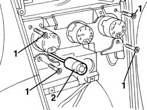
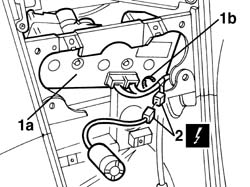
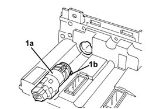
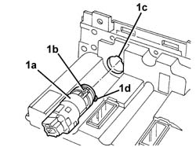

5010D30 passenger compartment air temperature sensor - r+r following electrical wiring check operation
- Path
- Procedures > 50 AUXILIARY UNITS > 5010 CLIMATE CONTROL - MISCELLANEOUS > 5010D air temperature recording system > 5010D30 passenger compartment air temperature sensor - r+r following electrical wiring check operation
- Kind
- repair procedure (removal / refitting; the operation number is the code)
- Applies to
- all engines; all production periods
- Interactive page
- https://sloeber94.github.io/elrnDB-a156/en/#/3238270
Applies to: all engines; all production periods
 Removing
Removing
 Refitting
Refitting5040D22 control (one) of air conditioner control support - arrange
2125C24 gear lever knob - r + r
7040A60 under facia trim - r+r
1. Unscrew the bolts
2. Release the passenger compartment temperature sensor.

Applies to: all engines; all production periods
1. Rotate the control unit (1a) so that the cable retaining band (1b) for the passenger compartment temperature sensor can be cut.
2. Disconnect the electrical connection and extract the passenger compartment temperature sensor.
 | Name | Connector |
|---|---|---|
2 | Passenger compartment air sensor |

Applies to: all engines; all production periods
Refitting
RemovingCheck that the sensor is not damaged and, if necessary check the electrical properties.
Check the resistance between 3 and 4.
 | Measurement | Value | |
|---|---|---|---|
- | Resistance at 25øC (KOhm) | 10 |
Connect pin 1 to 12V and in 2 to earth and check that the inner motor is working properly
Connect the electrical connection for the passenger compartment temperature sensor.
Fit the cable retaining band.
Fit the passenger compartment temperature sensor
Tighten the screws.
7040A60 under facia trim - r+r
2125C24 gear lever knob - r + r
5040D22 control (one) of air conditioner control support - arrange
Check the operation of the system using the Examiner or the other diagnostic equipment.
Applies to: all engines; production: da 03/02 a 09/03, da 10/03
Removing
Refitting7040A65 passenger compartment box lock , one , r r
7040L37 gear lever plate - r r
5040D18 air conditioner control unit - r r
1. Rotate the sensor and fan (1a) in an anti-clockwise direction to release the retainer (1b). Extract the sensor.

Applies to: all engines; production: da 03/02 a 09/03, da 10/03
Refitting
RemovingCheck that the sensor is not damaged.
Fit the sensor (1a) in place ensuring that the electrical circuit (1b) coincides with the housing (1c), then rotate the sensor engaging the retainer (1d).

Applies to: all engines; production: da 03/02 a 09/03, da 10/03
5040D18 air conditioner control unit - r r
7040L37 gear lever plate - r r
7040A65 passenger compartment box lock , one , r r
Check the operation of the system using the Examiner or the other diagnostic equipment.
Topics linked from this page (10)
- 2125C24 gear lever knob - r + r
- 5040D18 air conditioner control unit - r r
- 5040D22 control (one) of air conditioner control support - arrange
- 5570T80 car radio unit - r+r
- 7040A60 under facia trim - r+r
- 7040A65 passenger compartment box lock , one , r r
- 7040L20 tunnel trim - r r
- 7040L37 gear lever plate - r r
- 7065C42 ashtray (one) r+r
- K89 Passenger compartment air sensor